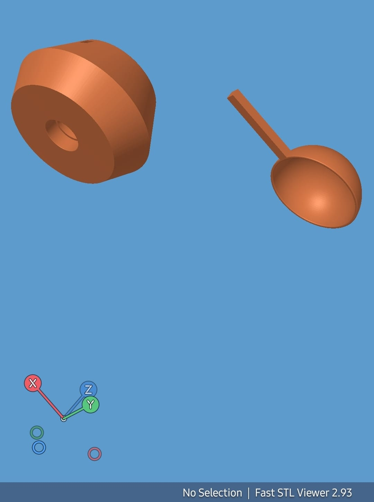
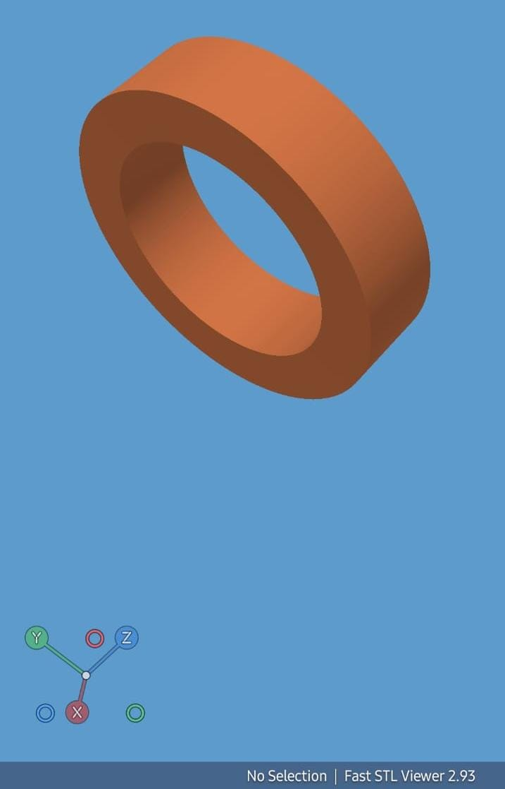

El viento mueve
Las cazoletas capturan el viento y hacen girar el rotor del anemómetro.
Un proyecto para explorar cómo se mide el viento, la temperatura y la humedad. Electrónica, diseño 3D y curiosidad en una misma estación.

¿Cómo podemos transformar lo que pasa a nuestro alrededor en información?
La propuesta es desarrollar una estación meteorológica basada en ESP32. El diseño combina sensores electrónicos con una estructura de piezas impresas en 3D para estudiar variables del ambiente.
El anemómetro utiliza un módulo Hall KY-003 para detectar el paso de un imán. Al contar los pulsos se puede conocer la frecuencia de giro; para convertirla en velocidad del viento, es necesario calibrar el conjunto.
Un proyecto en desarrollo.
Esta página reúne la propuesta y el material de referencia. La construcción, las conexiones y la calibración deben verificarse antes de presentar mediciones.
Las cazoletas capturan el viento y hacen girar el rotor del anemómetro.
Un imán pasa frente al KY-003 y produce señales que permiten contar las vueltas.
La placa cuenta los pulsos por intervalo. Una calibración permitirá relacionarlos con la velocidad del viento.
Los elementos que forman
parte de la propuesta.
El microcontrolador central recibe las señales y organiza las lecturas. El ESP32 clásico integra Wi-Fi de 2,4 GHz y Bluetooth, útiles para una futura transmisión de datos.
La alimentación de la placa depende del modelo de desarrollo. Debe verificarse su pinout antes de conectar los sensores.
Descargar datasheet ESP32 · PDF ↓
Este módulo utiliza el efecto Hall para detectar la presencia de un campo magnético sin contacto mecánico. Un imán situado en el rotor permite generar eventos de paso.
La ficha adjunta describe una variante con A3141. El integrado y la polaridad de activación deben confirmarse en el módulo utilizado. La velocidad del viento requiere calibración.
Descargar ficha KY-003 · PDF ↓
Integra un elemento de humedad y un sensor de temperatura. Entrega datos digitales mediante una línea de comunicación con temporización propia.
Valores de la ficha adjunta. Debe instalarse en un lugar ventilado, protegido de lluvia y radiación solar directa; no es un sensor impermeable.
Descargar datasheet DHT11 · PDF ↓Los documentos aportados incluyen el circuito SX1276 y el módulo RA-02. Son referencias distintas: el RA-02 suele integrar un SX1278, por lo que no deben confundirse sus bandas ni sus especificaciones.
Estos transceptores se comunican con el microcontrolador mediante SPI. Una implementación requiere dos equipos compatibles, antenas adecuadas y una frecuencia permitida en el lugar de uso. El alcance depende del entorno y de la configuración; no se ha validado todavía en este proyecto.
Una estructura pensada desde sus partes: captar el movimiento, alojar los sensores y facilitar el montaje. El diseño se explora mediante modelos 3D y referencias de ensamblaje.

01 / ROTOR02 / CAZOLETALa geometría final, las tolerancias y la respuesta al viento requieren validación física.

La vista en corte ayuda a estudiar la disposición de los elementos y su relación con la carcasa.

El soporte del eje y la ubicación del sensor son puntos a revisar durante el ensamblaje.
Los modelos STL permiten revisar la geometría y planificar la fabricación. El material de impresión y sus parámetros deberán elegirse según las condiciones de uso.
Descarga los modelos originales en formato STL.
Fuentes de consulta para comprender los principios y los componentes del proyecto.
Diseño de un invernadero inteligente basado en ESP32 y módulos LoRa. El sistema reúne sensores ambientales, comunicación entre nodos y actuadores para proteger y acompañar el desarrollo de los cultivos.
Desarrollar un prototipo de bajo costo que monitoree variables ambientales y permita controlar la ventilación, el techo móvil, la iluminación y el riego desde una aplicación móvil.
Las mediciones se concentran en un ESP32 central y se consultan desde una aplicación realizada en MIT App Inventor. La propuesta combina automatización, electrónica y observación del entorno.

LoRa enlaza los equipos.
Wi-Fi conecta el control con el móvil.
Ubicado en el invernadero o en el mástil. Lee los dos DHT11, el sensor de lluvia y los pulsos del sensor Hall asociado al anemómetro. Envía las mediciones por LoRa.
Recibe los paquetes, procesa las mediciones y ejecuta reglas de automatización. Ofrece Wi-Fi local e interfaz HTTP/API para consultar datos y enviar órdenes desde MIT App Inventor.
Importante: LoRa comunica el nodo remoto con el central; no es la conexión directa del teléfono. El teléfono se comunica con el ESP32 central mediante Wi-Fi local.
Cuando el sensor de lluvia detecta precipitaciones, el ESP32 ordena cerrar el techo mediante servomotores. Si las condiciones son seguras y la lógica lo permite, puede ordenar la apertura para favorecer la ventilación.
Recomendación del informe: incorporar finales de carrera o confirmación de posición para evitar forzar el mecanismo.El cooler 4x4 actúa como extractor. El ESP32 compara las lecturas de ambos DHT11 con un umbral de temperatura: activa el extractor al superarlo y lo detiene al descender por debajo del umbral de apagado.
Se recomienda usar histéresis: dos umbrales distintos para evitar encendidos y apagados repetitivos.La iluminación complementaria puede programarse por franjas horarias desde la aplicación. El tiempo y la intensidad deben ajustarse al tipo de cultivo y a las luminarias utilizadas.
Su función es complementar la luz natural cuando resulte insuficiente.La bomba suministra agua a los cultivos. La aplicación permite configurar horarios, duración de cada ciclo y activación manual. El ESP32 central recibe o almacena la programación y activa la bomba mediante una etapa de potencia adecuada.
Se recomienda proteger la bomba contra funcionamiento en seco y verificar el nivel de agua.El anemómetro aporta información
meteorológica al invernadero.
El sensor Hall KY-003 detecta el paso de un imán colocado en el anemómetro. Cada detección genera un pulso que el ESP32 puede contar durante un intervalo de tiempo.


Microcontrolador que procesa lecturas, ejecuta automatizaciones y gestiona las comunicaciones LoRa y Wi-Fi.
Radios de largo alcance y bajo consumo para intercambiar datos entre el nodo remoto y el nodo central.
Sensores digitales de temperatura y humedad relativa, ubicados en dos sectores para comparar condiciones internas.
Placa detectora de gotas o precipitación cuya señal inicia la secuencia de cierre del techo.
Detecta el paso de un imán, genera pulsos y permite estimar las vueltas del anemómetro.
Actuadores de posición controlada para abrir y cerrar el techo móvil.
Ventilador/extractor que renueva el aire interior y ayuda a regular la temperatura.
Impulsa el agua hacia el riego y puede programarse por horarios desde la aplicación.
Iluminación complementaria para los períodos en que la luz natural resulte insuficiente.
MIT App Inventor será la interfaz de supervisión y control desde un teléfono Android, conectado al ESP32 central por Wi-Fi local.
Temperatura y humedad de ambos DHT11, estado de lluvia y velocidad estimada del viento.
Estado del techo y del cooler; control manual cuando el modo automático esté desactivado.
Varios horarios, duración de cada riego, activación o desactivación de programas y riego manual.
Programación de horarios de encendido y apagado de las luces LED.
Avisos de lluvia, pérdida de comunicación, sensor desconectado o nivel de agua bajo si se incorpora ese sensor.
Comparar ambos sensores en el mismo ambiente y luego en dos zonas. Resultado esperado: lecturas estables y diferencias ambientales identificables.
Humedecer el sensor y observar la orden a los servos. Resultado esperado: cierre sin trabas y confirmación de posición.
Elevar la temperatura medida o simular el umbral. Resultado esperado: activación y apagado según histéresis.
Programar dos horarios y comprobar duración. Resultado esperado: activación en los horarios y detención al finalizar.
Enviar paquetes y girar el anemómetro a distintas velocidades. Resultado esperado: recepción de datos y estimación del viento después de calibrar.
Consultar valores y enviar órdenes desde el celular. Resultado esperado: estados correctos y confirmación de órdenes.
Documentos de referencia y fichas técnicas disponibles en el repositorio.
La integración de ESP32, LoRa, sensores y actuadores permite proyectar un invernadero capaz de supervisar el ambiente y automatizar tareas relevantes para el cuidado de los cultivos. Los dos DHT11 permiten comparar sectores; el sensor de lluvia protege el interior mediante el cierre del techo; el cooler contribuye a la ventilación; la bomba permite programar el riego; las luces LED aportan iluminación complementaria y el anemómetro suma información sobre el viento.
Para que el prototipo sea confiable será necesario calibrar los sensores, probar el alcance LoRa, dimensionar correctamente las fuentes y protecciones y validar cada automatismo en condiciones reales.